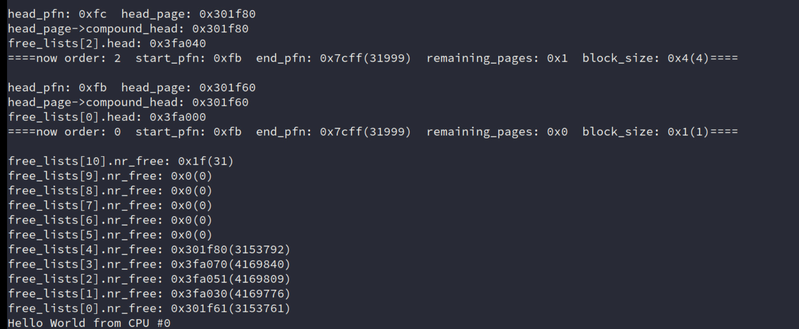
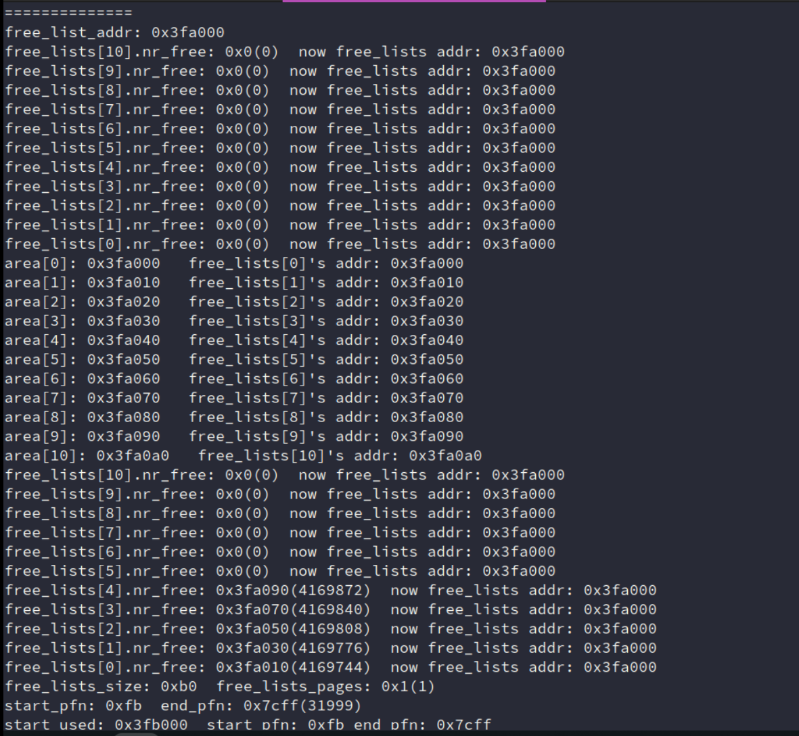
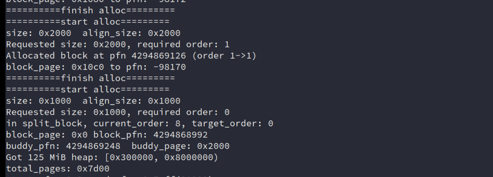
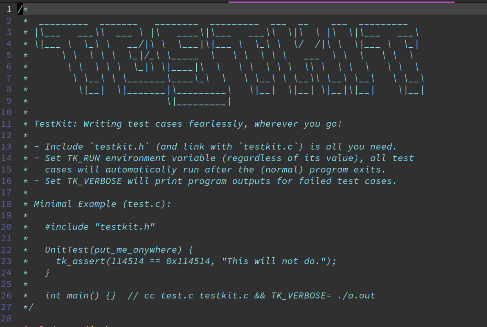

L1
Implement
pmm Version1
块分配：
- 请求size <= 阈值（如4KB - sizeof(header_t)）。
- 计算总需要的大小：total = sizeof(header_t) + align_size（对齐后的用户大小）。
- 在空闲链表中寻找足够大的块。
- 分割块，分配后，写入header_t，设置is_page为false，size为align_size。
- 返回header之后的内存地址。
页分配：
- 请求size > 阈值。
- 计算需要的页数：pages = (size + sizeof(header_t) + PAGE_SIZE - 1) / PAGE_SIZE.
- 从页分配器中分配连续的pages页。
- 在页的起始地址写入header_t，设置is_page为true，size为pages。
- 返回header之后的内存地址。
这样，释放时：
- 用户调用kfree(ptr)。
- ptr减去sizeof(header_t)得到header地址。
- 读取header中的is_page和size。
- 如果是页分配，则释放pages页。
- 如果是块分配，则将整个块（header + size）加入块空闲链表。
页表元数据初始化
还是指针的问题
靠！！！
原来是动态分配的！！！
一直定义成静态分配的全局数组！！！我在开发os呀！
又一个问题：
head_pfn: 0x500 head_page: 0x307800 head_page->compound_head: 0x307800 free_lists[10].head: 0x0 ====now order: 10 start_pfn: 0xbd end_pfn: 0x7cff(31999) remaining_pages: 0x443 block_size: 0x400(1024)==== head_pfn: 0x100 head_page: 0x301800 head_page->compound_head: 0x301800 free_lists[10].head: 0x0 ====now order: 10 start_pfn: 0xbd end_pfn: 0x7cff(31999) remaining_pages: 0x43 block_size: 0x400(1024)==== head_pfn: 0xc0 head_page: 0x301200 head_page->compound_head: 0x301200 free_lists[6].head: 0x3bb860 ====now order: 6 start_pfn: 0xbd end_pfn: 0x7cff(31999) remaining_pages: 0x3 block_size: 0x40(64)==== head_pfn: 0xbe head_page: 0x3011d0 head_page->compound_head: 0x3011d0 free_lists[1].head: 0x3bb820 ====now order: 1 start_pfn: 0xbd end_pfn: 0x7cff(31999) remaining_pages: 0x1 block_size: 0x2(2)==== head_pfn: 0xbd head_page: 0x3011b8 head_page->compound_head: 0x3011b8 free_lists[0].head: 0x3bb800 ====now order: 0 start_pfn: 0xbd end_pfn: 0x7cff(31999) remaining_pages: 0x0 block_size: 0x1(1)====
奇怪，为什么低阶的空闲块链表都接上了啊，但那时高阶的还是NULL？不可能啊？我还是从高阶到低阶插入的！
这么解决就可以了？？
虽然虚拟机还是神秘重启，但是好歹输出的上面内容对了。
-
struct page的buddy_list初始化问题：-
你的
struct page定义中，buddy_list是一个struct list_head *类型的指针，而不是一个struct list_head类型的结构体。 -
你应该将其定义为：
c复制
struct list_head buddy_list; -
这样可以避免使用指针，直接初始化和使用链表。
-
发现 nr_free 破坏：


调试发现，在刚进 init_free_block 的时候，就出现nr_free被破坏了的情况了。
发现在这个 fa0xx 刚好就是存 free_lists 的地址。基本就是自己的free_lists初始化覆盖了一些。
空闲链表初始化
在 Linux 伙伴系统中，
free_area的head节点确实被设计为一个哨兵节点，其主要作用是避免空指针问题，并简化链表操作。根据搜索结果中的源码分析，以下是关于哨兵节点和链表操作的详细说明：1. 哨兵节点的作用
哨兵节点不存储实际数据：在 Linux 伙伴系统中，
free_area的head节点是一个哨兵节点，它本身不存储任何页块数据，而是作为链表的起始点。哨兵节点的存在主要是为了简化链表操作，避免空指针的处理问题。链表头节点的初始化：在初始化
free_area时，每个free_area的head节点都会被初始化为一个空的哨兵节点。例如：c复制
INIT_LIST_HEAD(free_area->free_list[migratetype]);这确保了链表在初始化时是一个空链表。
2. 链表操作的安全性
链表操作的正确性：在 Linux 伙伴系统中，链表操作（如
list_add、list_del）都是基于哨兵节点进行的。哨兵节点的存在确保了链表操作的安全性，避免了空指针的处理问题。链表头节点的使用：哨兵节点作为链表的头节点，所有链表操作都以哨兵节点为起点。例如，在分配内存时，从链表中移除一个页块：
c复制
page = get_page_from_free_area(area, migratetype); del_page_from_free_list(page, zone, order);这里的
get_page_from_free_area和del_page_from_free_list都是基于哨兵节点进行操作的。3. 实际源码分析
哨兵节点的初始化：在
free_area的初始化过程中，每个free_list都会被初始化为一个空的哨兵节点：c复制
struct free_area { struct list_head free_list[MIGRATE_TYPES]; unsigned long nr_free; }; INIT_LIST_HEAD(free_area->free_list[migratetype]);这确保了链表在初始化时是一个空链表。
链表操作的示例：在内存分配过程中，从链表中移除一个页块并将其添加到另一个链表中：
c复制
page = get_page_from_free_area(area, migratetype); del_page_from_free_list(page, zone, order); add_to_free_list(page, zone, order, migratetype);这里的
get_page_from_free_area、del_page_from_free_list和add_to_free_list都是基于哨兵节点进行操作的。4. 结论
在 Linux 伙伴系统中，
free_area的head节点确实是一个哨兵节点，其主要作用是避免空指针问题，并简化链表操作。哨兵节点本身不存储任何页块数据，而是作为链表的起始点。链表操作（如list_add、list_del）都是基于哨兵节点进行的，确保了链表操作的安全性和正确性。如果你的代码中将
free_area的head节点用作存储实际数据的节点，这与 Linux 伙伴系统的实现方式不一致。建议你将head节点初始化为一个空的哨兵节点，并确保所有链表操作都基于哨兵节点进行。
无论链表是否为空，都直接将新的页块节点添加到哨兵节点之后。这样，链表的操作就变得一致了。所以，这个地方的条件判断其实可以去掉，直接使用 list_add_tail 或 list_add 将页块节点添加到哨兵节点的链表中。
问题1

block_page传进来是0，导致block_pfn、buddy_pfn、buddy_page 计算错误。
进一步学习使用哨兵节点
inssssssssssssssssssssssssss nr_free: 0
head: 0x3fa030
&head: 0x3fa030
head->prev: 0x3fa030
head->next: 0x3fa030
page->next to page, and order is 0x0
page->next to page, and buddy_list is 0x3fa030
current_order: 3
刚开始的做法：
2. 结构体定义的修正
原代码中
struct free_area的head是struct list_head*类型（指针），这需要手动分配内存给哨兵节点，容易导致错误。 修正后的结构体应为：struct free_area { struct list_head head; // 直接作为哨兵节点（结构体实例，非指针） unsigned long nr_free; };
- 这样，每个
free_area的head自身就是一个独立的哨兵节点，无需额外分配内存。
实际上还是对内存分配理解的并不深刻。
里面定义一个指针？还要分配内存给他？为什么？这和直接用一个变量的区别在哪？
继续复习理解。
来自deepseek：
逐步解释：指针成员 vs 结构体实例成员
1. 指针成员需要手动分配内存
定义示例：
问题：struct free_area { struct list_head *head; // 指针成员 unsigned long nr_free; };
指针head本身只是一个地址（4/8 字节），它指向的内存区域需要手动分配。如果未分配内存直接使用，会导致访问非法内存（野指针）。操作示例：
// 错误用法：未分配内存 struct free_area area; INIT_LIST_HEAD(area.head); // area.head 是野指针，崩溃！ // 正确用法：手动分配内存 struct free_area area; area.head = (struct list_head *)kmalloc(sizeof(struct list_head)); // 分配内存 INIT_LIST_HEAD(area.head); // 初始化链表头
2. 结构体实例成员无需额外分配内存
定义示例：
优势：struct free_area { struct list_head head; // 结构体实例成员 unsigned long nr_free; };
结构体head的内存会随着free_area的分配自动分配，无需手动管理。例如：struct free_area area; // head 的内存已随 area 分配 INIT_LIST_HEAD(&area.head); // 直接使用地址，无需额外分配
操作系统内核中的内存分配
1. 内核中的内存分配责任
在操作系统内核中，所有动态内存分配必须由开发者显式管理，包括： - 静态分配：全局变量或栈变量（如
struct free_area free_lists[MAX_ORDER]）。 - 动态分配：通过内核内存分配器（如kmalloc）手动申请。2. 用户代码的问题分析
原代码中
free_lists的head定义为指针：在struct free_area { struct list_head *head; // 指针成员 unsigned long nr_free; };init_free_lists中未给head分配内存，直接调用：这会导致内核崩溃，因为INIT_LIST_HEAD(free_lists[i].head); // 野指针操作！head指向无效地址。
修正后的代码示例
1. 结构体定义修正
struct free_area { struct list_head head; // 直接作为结构体实例 unsigned long nr_free; };2. 初始化链表头
static void init_free_lists(...) { for (int i = 0; i < MAX_ORDER; i++) { INIT_LIST_HEAD(&free_lists[i].head); // 直接操作结构体实例的地址 free_lists[i].nr_free = 0; } }3. 链表操作
// 添加头页到 free_lists[order] 的链表 list_add(&head_page->buddy_list, &free_lists[order].head); free_lists[order].nr_free++;
关键总结
- 指针成员：需要手动分配内存（如
kmalloc），否则是野指针。- 结构体实例成员：内存随父结构体自动分配，无需额外操作。
- 内核开发准则：优先使用结构体实例成员，避免手动内存管理错误。
通过这种方式，哨兵节点（
free_lists[order].head）的内存会随free_lists数组的分配自动存在，无需单独处理，既安全又高效。来自kimi：为什么结构体中定义指针需要分配内存？
在 C 语言中，指针本身只是一个变量，它存储的是某个内存地址。如果在结构体中定义了一个指针（例如
struct list_head *head），这意味着该指针指向某个内存位置，但它自身并不包含实际的数据结构。为了使指针能够正确引用一个
struct list_head实例，必须在运行时为其分配内存。例如：c复制
struct free_area my_area; my_area.head = malloc(sizeof(struct list_head)); // 动态分配内存 if (!my_area.head) { // 处理内存分配失败的情况 } INIT_LIST_HEAD(my_area.head); // 初始化链表头直接定义结构体实例的优势
如果将
struct list_head直接定义为结构体实例（即非指针类型），例如struct list_head head;，则该结构体在内存中已经有了一个分配的区域。无需额外分配内存，初始化也更简单：c复制
struct free_area my_area; INIT_LIST_HEAD(&my_area.head); // 初始化链表头应用例子代码
以下是一个简单的例子，演示不同定义方式的区别：
1. 使用指针作为链表头
c复制
#include <stdio.h> #include <stdlib.h> #include <string.h> // 定义链表节点 struct list_head { struct list_head *next, *prev; }; // 定义一个使用指针作为链表头的结构体 struct free_area_ptr { struct list_head *head; }; // 初始化链表头 void init_list_head(struct list_head *head) { head->next = head; head->prev = head; } int main() { struct free_area_ptr area_ptr; // 为链表头分配内存 area_ptr.head = (struct list_head *)malloc(sizeof(struct list_head)); if (!area_ptr.head) { fprintf(stderr, "Memory allocation failed\n"); return 1; } // 初始化链表头 init_list_head(area_ptr.head); // 使用链表... // ... // 释放分配的内存 free(area_ptr.head); return 0; }2. 使用结构体实例作为链表头
c复制
#include <stdio.h> #include <stdlib.h> #include <string.h> // 定义链表节点 struct list_head { struct list_head *next, *prev; }; // 定义一个使用结构体实例作为链表头的结构体 struct free_area_instance { struct list_head head; }; // 初始化链表头 void init_list_head(struct list_head *head) { head->next = head; head->prev = head; } int main() { struct free_area_instance area_instance; // 初始化链表头 init_list_head(&area_instance.head); // 使用链表... // ... return 0; }为什么操作系统内核场景下推荐直接定义结构体实例？
在操作系统内核中，内存管理非常关键，因为任何内存分配错误都可能导致整个系统崩溃。使用静态分配的结构体实例（而非指针）有以下优势：
无需手动分配内存：
结构体实例的内存由内核静态分配，无需额外调用
malloc或其他内存分配函数。例如，在内核中，
struct free_area可以直接作为全局数组或嵌入到其他结构体中：c复制
struct free_area free_lists[MAX_ORDER] __initdata; // 静态全局数组简化内存管理：
- 避免因内存分配失败导致的系统崩溃。
- 无需担心内核中复杂的内存回收机制。
减少代码复杂度：
初始化更简单，无需显式分配和释放内存。例如：
c复制
static struct free_area free_lists[MAX_ORDER]; for (int i = 0; i < MAX_ORDER; i++) { INIT_LIST_HEAD(&free_lists[i].head); }结论
在你的代码中，将
struct free_area的head定义为struct list_head而非指针，不仅可以简化内存管理，还可避免因指针使用不当导致的错误。以下是修正后的struct free_area定义：c复制
struct free_area { struct list_head head; // 直接定义为结构体实例 unsigned long nr_free; };这样，在初始化时只需调用
INIT_LIST_HEAD即可：c复制
INIT_LIST_HEAD(&free_lists[i].head);建议按照上述方式修改代码，以避免潜在的内存管理和链表操作错误。
一些参考
我们在讲解 “并发数据结构” 时讲解了 kalloc/free 的算法和实现。你应该阅读：
- 教科书第 29 章 (并发数据结构)，学习如何对数据结构进行并发控制；
- 教科书第 17 章 (空闲空间管理)，学习如何管理物理内存；
- 互联网上的其他资料。如果你希望了解现代 malloc 实现，你可以参考来自两个代码巨头的设计：Google 的 tcmalloc 和 Microsoft 的 mimalloc。
4340 nowxxxxxxxxxxxxfree_lists[7].nr_free: 0
4341 head: 0x3fa0a8
4342 &head: 0x3fa0a8
4343 head->prev: 0x3fa0a8
4344 head->next: 0x3fa0a8
4345 page->next to page, and order is 3145728
4346 page->next to page, and buddy_list is 0x3fa0a8
4347 free_lists[10].nr_free: 30
4348 free_lists[9].nr_free: 1
4349 free_lists[8].nr_free: 1
4350 free_lists[7].nr_free: 0
4351 free_lists[6].nr_free: 0
4352 free_lists[5].nr_free: 0
4353 free_lists[4].nr_free: 0
4354 free_lists[3].nr_free: 0
4355 free_lists[2].nr_free: 0
4356 free_lists[1].nr_free: 0
4357 free_lists[0].nr_free: 0
4358
4359 nowxxxxxxxxxxxxfree_lists[8].nr_free: 1
4360 head: 0x300000
4361 &head: 0x3fa0c0
4362 head->prev: 0x300000
4363 head->next: 0x300000
4364 page->next to page, and order is 8
4365 page->next to page, and buddy_list is 0x3fa0c0
4366 AM Panic: addr should not less than start_used @ /home/jai/os-workbench/kernel/src/buddy.c:53
直接改用实际的物理内存块地址来计算了，之后再慢慢调页的版本。
spinlock
implement
这里直接使用老师在课上讲的 xv6 实现 互斥 (2) (内核中的自旋锁、Read-Copy-Update、互斥锁和 futex)
Xv6中实现了自旋锁(Spinlock)用于内核临界区访问的同步和互斥。自旋锁最大的特征是当进程拿不到锁时会进入无限循环，直到拿到锁退出循环。Xv6使用100ms一次的时钟中断和Round-Robin调度算法来避免陷入自旋锁的进程一直无限循环下去。显然，自旋锁看上去效率很低，我们很容易想到更加高效的基于等待队列的方法，让等待进程陷入阻塞而不是无限循环。然而，Xv6允许同时运行多个CPU核，多核CPU上的等待队列实现相当复杂，因此使用自旋锁是相对比较简单且能正确执行的实现方案。
进行测试：
os->init()完成操作系统所有部分的初始化。os->init()运行在系统启动后的第一个处理器上，中断处于关闭状态；此时系统中的其他处理器尚未被启动。因此在os->init的实现中，你完全不必考虑数据竞争等多处理器上的问题。os->run()是所有处理器的入口，在初始化完成后，框架代码调用_mpe_init(os->run)启动所有处理器执行。框架代码中，os->run只是打印 Hello World 之后就开始死循环；你之后可以在os->run中添加各种测试代码。所以就想象成是你的
os->run()就是threads.h里创建的一个线程，仅此而已！
实际使用
实际使用：
-
实际系统中比较常见的做法，而不是直接用
LOCK_INIT：将锁绑定到对象（对象初始化的时候就初始化这把锁），因为在真实的系统中绝大数内容都是动态分配的。lock_t lk1 = LOCK_INIT(); lock_t lk2 = LOCK_INIT(); lock_t lk3 = LOCK_INIT(); struct some_object { lock_t lock; int data; }; void object_init(struct some_object *obj) { obj->lock = LOCK_INIT(); obj->data = 100; } void create_object() { struct some_object *obj = malloc(sizeof(struct some_object)); assert(obj); object_init(obj); lock(&obj->lock); unlock(&obj->lock); free(obj); }
锁层级优化
首先考虑这个 spin_lock 的是被验证过的，是正确的，其次就是如何使用。
首先使用一把大锁保平安，先考虑正确性，这个还是比较容易验证的，在基本测试框架下还是能过。
但是无论如何这样的做法都是不太够的，所以考虑为每一阶的空闲链表维护单独的锁，但是这个时候就要仔细考虑加锁的位置和 lock ordering。
- 先从全局锁开始：
- 确保内存分配和释放的逻辑正确。
- 使用全局锁可以快速实现互斥，但性能较差。
- 过渡到基于
free_area的锁：- 一旦全局锁逻辑正确，可以逐步细化锁的粒度。
- 基于
free_area的锁可以减少并发冲突，提升性能。
额外，printf也会导致并发的问题，同样也是把spin_lock的实现复制一份到klib上。
顺便一说，在实际做的的时候，真的是确实体会到 RCU 真的是一个天才的想法，我自己写的时候，对于 free_lists 等共享变量真的是读多写少。
额外并发拓展
Linux中：
#define local_irq_save(flags) \
do { \
raw_local_irq_save(flags); \
if (!raw_irqs_disabled_flags(flags)) \
trace_hardirqs_off(); \
} while (0)
#define local_irq_restore(flags) \
do { \
if (!raw_irqs_disabled_flags(flags)) \
trace_hardirqs_on(); \
raw_local_irq_restore(flags); \
} while (0)
线程本地怎么理解？
slab实现
几个核心关键的点：cache、object、slab。
Slab 分配器核心机制与 API 流程解析
核心概念与层级关系
TODO
Cache（缓存池）
作用：管理特定大小的内存对象（如 32B、64B）
关键结构：
struct kmem_cachestruct kmem_cache { char *name; // 缓存名称（如 "size-32"） size_t obj_size; // 对象大小（对齐后） struct list_head slabs_full; // 已满的 Slab struct list_head slabs_partial; // 部分使用的 Slab struct list_head slabs_free; // 完全空闲的 Slab struct list_head list; // 全局缓存链表节点 };Slab（内存板）
作用：单页（PAGESIZE）内存块，分割为多个相同大小的对象
关键结构：
struct slabstruct slab { struct kmem_cache *cache; // 所属缓存池 int nr_used; // 已使用对象数 int nr_total; // 总对象数 void *free_list; // 空闲对象链表头 struct list_head list; // 链表节点（关联到 Cache 的 slabs_xxx） };Object（内存对象）
- 作用：用户实际分配的最小内存单元
- 内存布局：每个 Slab 页首存放
struct slab元数据，后续空间分割为对象// Slab 内存布局示例： +------------------+ | struct slab | // 元数据（占用 32 字节） +------------------+ | Object 0 | // 对齐后的对象 +------------------+ | Object 1 | +------------------+ | ... |
API 交互流程
1. 缓存创建与销毁
sequenceDiagram participant User participant Slab User->>Slab: kmem_cache_create("size-32",32,8) Slab->>Slab: __kmem_cache_create() // 创建 kmem_cache 结构 Slab->>Slab: init_cache_slab() // 分配第一个 Slab 页 Slab->>User: 返回 kmem_cache 指针 User->>Slab: kmem_cache_destroy(cache) Slab->>Slab: 释放所有关联 Slab 页 Slab->>Slab: 从全局链表移除缓存
- 核心函数：
kmem_cache_create()：创建缓存池，初始化第一个 Slabkmem_cache_destroy()：销毁缓存池，释放所有 Slab 页2. 对象分配
sequenceDiagram participant User participant Slab User->>Slab: kmem_cache_alloc(cache) Slab->>Slab: 检查 slabs_partial → 有空闲则分配 Slab->>Slab: 若无空闲，检查 slabs_free → 分配新 Slab Slab->>Slab: 更新 Slab 状态（partial/full） Slab->>User: 返回 Object 地址
- 分配策略：
- 优先从
slabs_partial分配（部分使用的 Slab）- 若无可用，从
slabs_free分配新 Slab- 若内存不足，返回
NULL3. 对象释放
sequenceDiagram participant User participant Slab User->>Slab: kmem_cache_free(cache, obj) Slab->>Slab: 根据 Object 地址找到所属 Slab Slab->>Slab: 将 Object 加入 Slab 的 free_list Slab->>Slab: 更新 Slab 状态（free/partial/full）
- 状态迁移：
- Slab 从
full→partial：当释放一个对象时- Slab 从
partial→free：当所有对象释放时
启动阶段（Boot）的特殊处理
static struct kmem_cache boot_kmem_cache = { ... }; // 静态预分配的初始缓存 static char boot_store[...]; // 静态内存区域存放初始 kmem_cache 结构 // 启动时创建管理缓存的缓存 create_boot_cache(&kmem_cache, "kmem_cache", sizeof(struct kmem_cache), ...);
核心挑战：
- 自举（Bootstrapping）：在内存分配器完全初始化前，需要静态预分配初始缓存结构
- 内存来源：使用
boot_store静态数组代替动态分配- 状态管理：
slab_state标记初始化阶段（DOWN → PARTIAL → UP）流程：
- 使用静态内存创建
boot_kmem_cache- 通过
create_boot_cache()创建管理其他缓存的专用缓存- 初始化常用大小缓存池（如 8B、16B）
面试潜在问题与拓展方向
1. 并发安全
- 问题：多核环境下如何保证 Slab 操作的原子性？
- 参考思路：
- 使用自旋锁保护
kmem_cache结构- Per-CPU Slab 缓存减少锁竞争（类似 Linux 的 CPU 本地缓存）
2. 碎片优化
- 问题：如何减少内存碎片？
- 参考思路：
- 合并相邻空闲 Slab 页（需记录伙伴系统信息）
- 动态调整缓存大小策略（类似 SLUB 的队列设计）
3. 性能调优
- 问题：如何快速分配高频小对象？
- 参考思路：
- 预分配热门大小的缓存池
- 使用硬件加速（如 TLB 优化 Slab 查找）
4. 调试支持
- 问题：如何检测内存泄漏或越界访问？
- 参考思路：
- 在 Object 前后添加 Red Zone（保护区域）
- 记录分配栈信息（需扩展
kmem_cache结构）
总结
- 核心关系：
Cache → Slab → Object三级结构，通过预分配和状态管理实现高效内存分配- 设计亮点：启动阶段自举、Slab 状态迁移、空闲链表快速分配
- 优化方向：并发控制、碎片管理、调试工具增强
%%{init: {'theme': 'base', 'themeVariables': { 'fontSize': '12px'}}}%%
flowchart LR
subgraph 全局链表 slab_caches
A[slab_caches] --> B[cache1.list]
B --> C[cache2.list]
C --> D[cache3.list]
D --> A
end
subgraph cache1 结构
B1[cache1.slabs_full] --> S1[slabA.list]
B1 --> S2[slabB.list]
B2[cache1.slabs_partial] --> S3[slabC.list]
B3[cache1.slabs_free] --> S4[slabD.list]
end
subgraph cache2 结构
C1[cache2.slabs_full] --> T1[slabX.list]
C2[cache2.slabs_partial] --> T2[slabY.list]
end
关于 Fastpath 和 Slowpath
具体怎么区分出来的。
测试
了解一些实现好的一些框架。自己了解到 CUnit 和 CHECK。
CUnit 和 CHECK 测试框架的区别和优势
CUnit 和 CHECK 是两种常用的 C 语言单元测试框架，它们都旨在帮助开发者编写和执行单元测试，但它们在功能、设计和使用场景上有一些区别。以下是它们的主要区别和各自的优势：
CUnit
- 特点
- 轻量级：CUnit 是一个轻量级的单元测试框架，不依赖于复杂的库，适合小型项目和嵌入式系统。
- 易集成：可以轻松集成到任何 C 项目中，不需要修改太多项目配置。
- 跨平台：支持多种操作系统，包括 Windows、Linux 和 macOS。
- 丰富的断言接口：提供多种断言宏，用于验证测试结果。
- 测试组织结构：支持测试套件和测试用例的组织管理，允许开发者按逻辑分组测试。
- 测试结果报告：支持多种报告格式，包括 XML，方便与持续集成工具集成。
- 优势
- 简单易用：CUnit 的 API 设计简洁直观，易于学习和使用，适合初学者和小型项目。
- 轻量级：不依赖于复杂的库，适合资源受限的嵌入式系统。
- 跨平台支持：可以在多种操作系统上运行，具有良好的可移植性。
- 丰富的断言机制：提供多种断言宏，方便验证测试结果。
- 易于集成：可以轻松集成到构建系统（如 Makefile、CMake）中，支持自动化测试和持续集成。
CHECK
- 特点
- 支持复杂测试：CHECK 提供了更复杂的测试组织结构，支持多线程测试和测试隔离。
- 灵活的测试组织：支持测试套件和测试用例的灵活组织，适合复杂的测试场景。
- 多线程支持：CHECK 支持多线程测试，可以用于测试并发操作的代码。
- 内存泄漏检测：CHECK 提供了内存泄漏检测功能，帮助开发者发现和修复内存问题。
- 优势
- 功能丰富：CHECK 提供了更丰富的功能，如多线程测试、内存泄漏检测等，适合复杂的测试场景。
- 灵活的测试组织：支持更灵活的测试组织方式，适合需要复杂测试结构的项目。
- 多线程支持：支持多线程测试，可以用于测试并发操作的代码。
- 内存泄漏检测：提供内存泄漏检测功能，帮助开发者发现和修复内存问题。
CUnit 和 CHECK 的主要区别
特点 CUnit CHECK 功能复杂度 功能较为基础，适合简单的测试需求 功能丰富，支持复杂测试场景 多线程支持 不支持多线程测试 支持多线程测试 内存泄漏检测 不提供内存泄漏检测功能 提供内存泄漏检测功能 测试组织 支持基本的测试套件和测试用例组织 支持更灵活的测试组织方式 适用场景 适合小型项目和嵌入式系统 适合需要复杂测试的项目 选择建议
- CUnit：
- 适合小型项目和嵌入式系统。
- 适合初学者和需要简单易用的测试框架的开发者。
- 适合资源受限的环境。
- CHECK：
- 适合需要复杂测试的项目。
- 适合需要多线程测试和内存泄漏检测的场景。
- 适合需要灵活测试组织的项目。
总结
CUnit 和 CHECK 都是优秀的 C 语言单元测试框架，选择哪个框架取决于项目的具体需求和测试场景。CUnit 更适合小型项目和嵌入式系统，而 CHECK 更适合需要复杂测试的项目。
但是，鉴于还得熟悉相关 API 和 想尝试自己写个简单的试试，所以，这时候考虑自己做。
直接自己做了一部分，还是有bug的。
cat ../include/test/test-framework.h
#ifndef __TEST_FRAMEWORK_H
#define __TEST_FRAMEWORK_H
#include <utils.h>
#define TEST(test_name) static void test_name()
#define CHECK(cond, ...) do { \
if (!(cond)) { \
printf(ANSI_FG_RED "Test FAIL!" ANSI_NONE \
"@ %s:%d | %s | ", __FILE__, __LINE__, #cond); \
printf(__VA_ARGS__); \
printf("\n"); \
panic(0); \
} } while (0)
#define RUN_TEST(test_fn) do { \
printf(ANSI_FG_CYAN "[ RUN ]" ANSI_NONE " %s\n", #test_fn); \
test_fn(); \
printf(ANSI_FG_GREEN "[ PASSED ]" ANSI_NONE " %s\n", #test_fn); \
} while(0)
// 测试套件分类宏
#define TEST_SUITE(name, color, ...) do { \
printf("\n%s[==========]" ANSI_NONE " %s\n", color, name); \
void (*tests[])(void) = { __VA_ARGS__ }; \
for (unsigned i = 0; i < sizeof(tests)/sizeof(tests[0]); i++) { \
RUN_TEST(tests[i]); \
} \
printf("%s[==========]" ANSI_NONE " %s Completed\n", color, name); \
} while(0)
// 具体分类的快捷宏
#define UNIT_TEST_SUITE(...) TEST_SUITE("Unit Tests", ANSI_FG_CYAN, ##__VA_ARGS__)
#define INTEG_TEST_SUITE(...) TEST_SUITE("Integration", ANSI_FG_CYAN, ##__VA_ARGS__)
#define STRESS_TEST_SUITE(...) TEST_SUITE("Stress Tests", ANSI_FG_CYAN, ##__VA_ARGS__)
#define PERF_TEST_SUITE(...) TEST_SUITE("Performance", ANSI_FG_CYAN, ##__VA_ARGS__)
#define RAND_TEST_SUITE(...) TEST_SUITE("Random Ops", ANSI_FG_CYAN, ##__VA_ARGS__)
#endif
正准备改bug的时候（比如test[i] 函数名的显示）。
但是！在2025.03.04 老师又发布了一个自己实现的测试框架！仅仅两百多行，质量写得比我的好得多！
为什么不直接用起来呢！

misc
模块化设计
os 是一个操作系统的 “模块”，可以看成是我们用 C 实现的面向对象编程，能增加代码的可读性。随着实验的进展，你会发现模块机制清晰地勾勒出了操作系统中各个部分以及它们之间的交互。
其实看到了很多次这种写法了，并没有系统学习过用起来。
#define MODULE(mod) \
typedef struct mod_##mod##_t mod_##mod##_t; \
extern mod_##mod##_t *mod; \
struct mod_##mod##_t
#define MODULE_DEF(mod) \
extern mod_##mod##_t __##mod##_obj; \
mod_##mod##_t *mod = &__##mod##_obj; \
mod_##mod##_t __##mod##_obj
使用 MODULE 声明一个模块，用 MODULE_DEF 实际定义它。比如 os：
MODULE(os) {
void (*init)();
void (*run)();
};
MODULE_DEF(os) = {
.init = os_init,
.run = os_run,
};
typedef struct mod_os_t mod_os_t;
extern mod_os_t *os;
struct mod_os_t {
void (*init)();
void (*run)();
};
...
extern mod_os_t __os_obj;
mod_os_t *os = &__os_obj;
mod_os_t __os_obj = {
.init = os_init,
.run = os_run,
};
APIC
Advanced Programmable Interrupt Controller
其实这里学习过 RISC-V 的 PLIC 和 CLINT，类比过来也是很好理解的。
直接 AI 生成，解析 abstract-machine/am/src/x86/qemu/ioe.c 里 APIC 部分的代码。
注意还有个叫 ACPI 的东西
basic concept
- 本地APIC（LAPIC）
- 功能：每个CPU核心都有一个本地APIC，用于处理本地中断（如定时器中断、IPIs等）。
- 特点：
- 可以发送和接收中断。
- 支持多种中断类型（如固定、低优先级、周期性等）。
- 可以通过内存映射的方式访问其寄存器。
- I/O APIC
- 功能：用于管理外部设备的中断，将外部中断信号转换为APIC中断。
- 特点：
- 支持多个中断源。
- 可以将中断分配给特定的CPU核心。
- 通过内存映射访问其寄存器。
parse APIC 模拟
-
宏定义
#define ID (0x0020/4) // ID #define VER (0x0030/4) // Version #define TPR (0x0080/4) // Task Priority #define EOI (0x00B0/4) // EOI #define SVR (0x00F0/4) // Spurious Interrupt Vector #define ENABLE 0x00000100 // Unit Enable #define ESR (0x0280/4) // Error Status #define ICRLO (0x0300/4) // Interrupt Command #define ICRHI (0x0310/4) // Interrupt Command [63:32] #define TIMER (0x0320/4) // Local Vector Table 0 (TIMER) #define PCINT (0x0340/4) // Performance Counter LVT #define LINT0 (0x0350/4) // Local Vector Table 1 (LINT0) #define LINT1 (0x0360/4) // Local Vector Table 2 (LINT1) #define ERROR (0x0370/4) // Local Vector Table 3 (ERROR) #define TICR (0x0380/4) // Timer Initial Count #define TCCR (0x0390/4) // Timer Current Count #define TDCR (0x03E0/4) // Timer Divide Configuration- 这些宏定义了LAPIC寄存器的地址偏移量和一些常用的标志位。
- 例如，
ID是LAPIC的ID寄存器，VER是版本寄存器，TPR是任务优先级寄存器。
-
I/O APIC寄存器
#define IOAPIC_ADDR 0xFEC00000 // Default physical address of IO APIC #define REG_ID 0x00 // Register index: ID #define REG_VER 0x01 // Register index: version #define REG_TABLE 0x10 // Redirection table baseIOAPIC_ADDR是I/O APIC的默认物理地址。REG_ID、REG_VER和REG_TABLE是I/O APIC的寄存器索引。
-
中断标志
#define INT_DISABLED 0x00010000 // Interrupt disabled #define INT_LEVEL 0x00008000 // Level-triggered (vs edge-) #define INT_ACTIVELOW 0x00002000 // Active low (vs high) #define INT_LOGICAL 0x00000800 // Destination is CPU id (vs APIC ID)
-
全局变量
volatile unsigned int *__am_lapic = NULL; // Initialized in mp.c struct IOAPIC { uint32_t reg, pad[3], data; } __attribute__((packed)); typedef struct IOAPIC IOAPIC; static volatile IOAPIC *ioapic;__am_lapic是指向当前CPU的LAPIC寄存器的指针。ioapic是指向I/O APIC的指针。
-
LAPIC写入函数
static void lapicw(int index, int value) { __am_lapic[index] = value; __am_lapic[ID]; }- 这是一个辅助函数，用于写入LAPIC寄存器。
__am_lapic[ID]是一个内存屏障，确保写操作完成。
-
2.6 初始化LAPIC
void __am_percpu_initlapic(void) { lapicw(SVR, ENABLE | (T_IRQ0 + IRQ_SPURIOUS)); lapicw(TDCR, X1); lapicw(TIMER, PERIODIC | (T_IRQ0 + IRQ_TIMER)); lapicw(TICR, 10000000); lapicw(LINT0, MASKED); lapicw(LINT1, MASKED); if (((__am_lapic[VER]>>16) & 0xFF) >= 4) lapicw(PCINT, MASKED); lapicw(ERROR, T_IRQ0 + IRQ_ERROR); lapicw(ESR, 0); lapicw(ESR, 0); lapicw(EOI, 0); lapicw(ICRHI, 0); lapicw(ICRLO, BCAST | INIT | LEVEL); while(__am_lapic[ICRLO] & DELIVS) ; lapicw(TPR, 0); }- 功能：初始化当前CPU的LAPIC。
- 启用LAPIC并设置中断向量。
- 配置定时器为周期性模式。
- 设置定时器初始计数值。
- 禁用LINT0和LINT1中断。
- 检查APIC版本并配置性能计数器。
- 配置错误中断。
- 清除错误状态寄存器。
- 发送INIT IPI（初始化中断）到所有CPU。
- 清除任务优先级寄存器。
- 功能：初始化当前CPU的LAPIC。
-
发送EOI
void __am_lapic_eoi(void) { if (__am_lapic) lapicw(EOI, 0); }- 功能：发送EOI（End of Interrupt）信号，通知APIC中断处理完成。
-
启动辅助处理器（AP）
void __am_lapic_bootap(uint32_t apicid, void *addr) { int i; uint16_t *wrv; outb(0x70, 0xF); outb(0x71, 0x0A); wrv = (unsigned short*)((0x40<<4 | 0x67)); wrv[0] = 0; wrv[1] = (uintptr_t)addr >> 4; lapicw(ICRHI, apicid<<24); lapicw(ICRLO, INIT | LEVEL | ASSERT); lapicw(ICRLO, INIT | LEVEL); for (i = 0; i < 2; i++){ lapicw(ICRHI, apicid<<24); lapicw(ICRLO, STARTUP | ((uintptr_t)addr>>12)); } }- 功能：启动一个辅助处理器（AP）。
- 设置启动地址到内存中。
- 发送INIT IPI到目标AP。
- 发送STARTUP IPI到目标AP。
- 功能：启动一个辅助处理器（AP）。
-
I/O APIC读写函数
static unsigned int ioapicread(int reg) { ioapic->reg = reg; return ioapic->data; } static void ioapicwrite(int reg, unsigned int data) { ioapic->reg = reg; ioapic->data = data; }功能：读写I/O APIC寄存器
-
初始化I/O APIC
void __am_ioapic_init(void) { int i, maxintr; ioapic = (volatile IOAPIC*)IOAPIC_ADDR; maxintr = (ioapicread(REG_VER) >> 16) & 0xFF; for (i = 0; i <= maxintr; i++){ ioapicwrite(REG_TABLE+2*i, INT_DISABLED | (T_IRQ0 + i)); ioapicwrite(REG_TABLE+2*i+1, 0); } }- 功能：初始化I/O APIC。
- 将I/O APIC的基地址映射到
ioapic指针。 - 读取I/O APIC的版本寄存器，获取最大中断号
maxintr。 - 遍历所有中断源，将每个中断源的重定向表条目初始化为禁用状态，并设置默认的中断向量。
- 将I/O APIC的基地址映射到
- 功能：初始化I/O APIC。
-
启用I/O APIC中断
void __am_ioapic_enable(int irq, int cpunum) { ioapicwrite(REG_TABLE+2*irq, T_IRQ0 + irq); ioapicwrite(REG_TABLE+2*irq+1, cpunum << 24); }- 功能：启用指定的I/O APIC中断，并将其分配给指定的CPU核心。
- 设置中断源的重定向表条目，启用中断并设置中断向量。
- 设置中断的目标CPU核心编号。
- 功能：启用指定的I/O APIC中断，并将其分配给指定的CPU核心。
多核
启动流程
借着框架代码分析看看，熟悉之后再去看看一些固件怎么写的。
How a multi-core system boot up | Priyanka Singh 发布的此话题相关的动态 | 领英
SMPBoot < LinuxBootLoader < Foswiki
Linux: 多核 CPU 启动流程简析_linux 多核启动-CSDN博客
参考文档：MultiProcessor Specification
abstract-machine/am/src/x86/x86.h
这些结构体的定义和设计是基于 MultiProcessor Specification (MP Spec) 文档（版本 1.4）。该文档由 Intel 提供，用于定义多处理器系统（Multiprocessor Systems）的硬件和软件接口标准。以下是每个结构体的设计目的和字段的作用：
TSS64(Task State Segment)
TSS64是 x86_64 架构下的任务状态段（Task State Segment）结构体，用于保存和恢复任务上下文。它在多任务操作系统中用于保存每个任务的寄存器状态。字段解析：
uint32_t rsv: 保留字段，通常用于对齐数据结构。uint64_t rsp0, rsp1, rsp2: 分别对应不同特权级（Ring 0, Ring 1, Ring 2）下的栈指针（Stack Pointer）。这些字段允许在不同特权级之间切换时恢复正确的栈指针。uint32_t padding[19]: 填充字段，用于确保结构体的大小和布局符合系统要求。
MPConf(MP Configuration Table Header)
MPConf是 MP 配置表的头部结构体，用于描述多处理器系统的硬件配置信息。它提供了系统中处理器、总线、中断控制器等组件的基本信息。字段解析：
uint8_t signature[4]: 签名字段，值为"PCMP"，用于标识这是一个 MP 配置表。uint16_t length: 配置表的总长度（以字节为单位）。uint8_t version: MP 规范的版本号（例如 14 表示版本 1.4）。uint8_t checksum: 校验和，用于验证配置表的完整性。uint8_t product[20]: 产品 ID 字符串，用于标识系统硬件。uint32_t oemtable: OEM 表的物理地址。uint16_t oemlength: OEM 表的长度。uint16_t entry: 配置表中条目的数量。uint32_t lapicaddr: 本地 APIC 的基地址。uint16_t xlength: 扩展表的长度。uint8_t xchecksum: 扩展表的校验和。uint8_t reserved: 保留字段。
MPDesc(MP Configuration Descriptor)
MPDesc是 MP 配置描述符结构体，用于指向 MP 配置表的物理地址，并提供一些系统配置信息。字段解析：
int magic: 魔数，用于标识结构体的有效性。uint32_t conf: MP 配置表的物理地址。uint8_t length: 描述符的长度。uint8_t specrev: MP 规范的版本号（例如 14 表示版本 1.4）。uint8_t checksum: 描述符的校验和。uint8_t type: 配置类型（例如处理器表、总线表等）。uint8_t imcrp: IMCR（Interrupt Mode Configuration Register）标志。uint8_t reserved[3]: 保留字段。
BootRecord
BootRecord是引导记录结构体，用于在系统启动时存储一些关键信息，例如跳转指令和处理器状态。字段解析：
uint32_t jmp_code: 跳转指令的机器码，用于在系统启动时跳转到指定的地址。int32_t is_ap: 标志字段，指示当前处理器是否是应用程序处理器（AP）。设计来源
这些结构体的设计是基于 MultiProcessor Specification (MP Spec) 文档（版本 1.4）。该文档详细定义了多处理器系统的硬件和软件接口标准，包括：
- 硬件配置：如何配置处理器、中断控制器（APIC）、内存和 I/O 设备。
- 中断模式：如何在多处理器系统中处理中断（例如 PIC 模式、虚拟线模式、对称 I/O 模式）。
- 启动过程：如何初始化系统和启动操作系统。
- 配置表：如何通过 MP 配置表向操作系统传递硬件信息。
这些结构体的设计目的是为了确保多处理器系统能够正确地初始化、配置和运行操作系统，同时保持与现有硬件和软件的兼容性。
实际上，这部分框架的内容感觉就是在写一个固件了，就是要启动一个os。
- 代码与硬件紧密结合
- 中断处理和内存管理：代码中大量涉及
APIC（高级可编程中断控制器）、中断描述符表（IDT）和内存管理单元（MMU）等硬件组件的初始化和配置。例如，cte.c文件中对中断描述符表的设置和中断处理函数的定义，以及vme.c文件中对内存页表的管理，这些都直接与硬件架构紧密相关，是系统启动和运行的基础。- 多处理器支持：
mpe.c文件中的多处理器初始化代码，涉及到 AP（应用处理器）的启动和同步，以及对lapic（本地 APIC）的配置，这些都是为了实现多处理器系统的协同工作，属于硬件层面的初始化逻辑。- 系统启动的关键环节
- BIOS/UEFI 功能：这些代码的功能在很多方面类似于 BIOS 或 UEFI 的某些部分。例如，BIOS 在系统启动时会初始化硬件、检测设备，并为操作系统提供一个启动环境。同样，代码中的启动逻辑（如
_start_c函数）和硬件初始化代码（如__am_lapic_init和__am_ioapic_init），为操作系统的运行准备了基础环境。- 引导加载程序：代码中的一些启动函数（如
_start_c和call_main）与引导加载程序的功能类似。引导加载程序负责从非易失性存储器（如磁盘或闪存）加载操作系统内核到内存中并启动它，而这些代码中的启动逻辑与引导加载程序的某些功能有相似之处。- 实际项目中的应用
- 服务器和嵌入式系统：在实际的服务器和嵌入式系统项目中，类似的固件代码用于初始化硬件、配置中断和内存管理，并为操作系统提供一个稳定的运行环境。例如，在高性能服务器中，多处理器支持和中断管理是系统高效运行的关键，需要通过固件来实现。
- 嵌入式控制器：对于需要嵌入式控制器的设备（如工业控制系统、网络设备等），这些固件代码可以用于实现低功耗模式、实时任务调度和硬件资源管理等功能。
- 代码结构和模块化设计
- 模块化功能：代码按照功能模块划分，如
cte.c负责中断处理，ioe.c负责硬件输入输出设备的初始化，mpe.c负责多处理器管理等。这种模块化设计使得代码易于维护和更新，适合固件开发的迭代过程。- 可移植性：代码中包含了一些与架构相关的代码（如
#ifdef __x86_64__和#else），这表明代码是为特定硬件架构设计的，具有一定的可移植性。固件通常需要针对特定的硬件平台进行定制和优化，这种设计思路符合固件开发的特点。- 代码的运行阶段和目的
- 早期初始化阶段：这些代码运行在系统的早期启动阶段，通常在操作系统内核加载之前。它们的目的是为操作系统提供一个稳定的硬件环境，包括初始化硬件设备、设置中断和内存管理机制等。
- 与操作系统的关系：代码为操作系统提供了一个抽象层，隐藏了硬件的复杂性。操作系统内核可以通过调用固件提供的接口来访问硬件资源，而无需直接处理底层硬件细节。
调度 TODO？
说到这个是因为在上面进行多处理器测试的时候发现输出了多次的 xxx test passed，就日常使用电脑的体验来说这应该是不对的吧？为什么输出了多次呢？是因为调度？目前没有实现多核调度，将任务分配个多核核心，导致都从同样的初始状态执行同样的任务？
还有问题，如果这样子思考，那不就肯定会导致死锁？？等等，每个核都有自己的register、本地中断，还有共享的memory。也就是每个核都有对这个数据的副本？？
需要学习。从利用多核加速QEMU的CPU模拟谈起 - Ubuntu中文论坛
要不先把带哦都那门课上了？
-
一些小坑
刚开始的时候，一直只能启动一个核心，折腾了一下一步步探到
scripts/platform/qemu.mk里发现的qemu里的配置不太对：-smp "$(smp),cores=$(smp),sockets=1"，改成-smp "$(smp),cores=1,sockets=$(smp)"即可。之后又发现，原来讲义已经提醒，对
qemu不是很熟悉。
C 学习
写自己的头文件的时候，把自己写的放在标准库之后。
不然如果自己写的有问题，那连带着标准库中的各种报错。
就比如自己头文件中的函数声明没加分号，导致之后所有头文件声明的函数全部无效，进一步体现为所有用到的函数全部未定义。